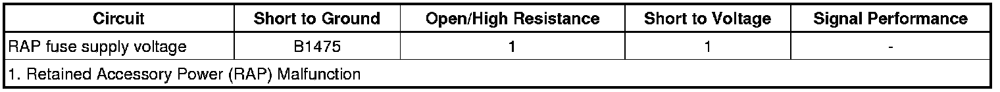

Retained Accessory Power (RAP) Malfunction
Retained Accessory Power (RAP) Malfunction
Diagnostic Instructions
* Perform the Diagnostic System Check - Vehicle (Initial Inspection and Diagnostic Overview) prior to using this diagnostic procedure.
* Review Strategy Based Diagnosis (Initial Inspection and Diagnostic Overview) for an overview of the diagnostic approach.
* Diagnostic Procedure Instructions (Initial Inspection and Diagnostic Overview)provides an overview of each diagnostic category.
Diagnostic Fault Information

Circuit/System Description
The BCM controlled RAP is a switch controlled voltage supply from the BCM. Power is provided for approximately 10 minutes after shutting the ignition OFF and removing the key, providing no door is opened. The RAP fuse supply voltage circuit is energized when any of the following conditions are true:
* Ignition Switch is in ACC or ON.
* The vehicle was remote started.
* The vehicle is in RAP power mode.
Reference Information
Schematic Reference
* Power Moding Schematics (Power Moding Diagrams)
* Power Distribution Schematics (Power Distribution Diagrams)
Connector End View Reference
Component Connector End Views (Connector Views)
Description and Operation
Retained Accessory Power (RAP) Description and Operation (Retained Accessory Power (RAP) Description and Operation)
Electrical Information Reference
* Circuit Testing (Component Tests and General Diagnostics)
* Connector Repairs (Component Tests and General Diagnostics)
* Testing for Intermittent Conditions and Poor Connections (Component Tests and General Diagnostics)
* Wiring Repairs (Component Tests and General Diagnostics)
Scan Tool Reference
Control Module References (Programming and Relearning)for scan tool information.
Circuit/System Testing
1. Ignition OFF, Disconnect the BCM X5 harness connector.
2. Ignition OFF, connect a test lamp between the RAP fuse supply voltage circuit terminal 11 and ground.
3. Ignition OFF, RAP power mode active, verify the test lamp illuminates.
• If the test lamp remains OFF, test the circuit for a short to ground or an open/high resistance. If the circuit tests normal, replace the BCM.
4. Ignition OFF, RAP power mode inactive, verify the test lamp does not illuminate.
• If the test lamp remains ON, replace the BCM.
Repair Instructions
Perform the Diagnostic Repair Verification (Verification Tests) after completing the repair.
Control Module References (Programming and Relearning)for body control module replacement, setup, and programming